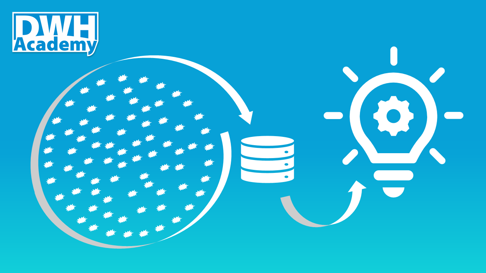

Entropy of the DWH systems
This is the first post on DWH Academy, starting the series of practical tips on how to build a successful data warehouse. This introduction puts Data warehouse into a wide context of physical science but in a simple friendly way
When DWH accumulates unorganized data it tends to experience some kind of Turbo Effect in the entropy increase. The main motivation to start the project DWH Academy was to share the patterns and tools which work to build a successful Data warehouse in the long term. To share advises how to gain the trust of the business users, how to build DWH in Agile, what are the proven design patterns in DWH and what are the core principles helping to avoid the experience of Turbo Effect in the entropy increase of your DWH.

Arrow of time
Increasing entropy defines the direction of time in our Universe. The Universe grows from simple to complex, from ordered to unordered. Even though the entropy can decrease locally, the global increase of Universe’s entropy is irreversible. That’s why entropy is called the arrow of time. It is the same for living and non-living things. Process of aging is driven by increasing entropy.
Entropy is usually described as a measure of disorder in a closed system. The concept itself is in our world so obvious, that we don’t even think about it. It is natural that without additional energy the disorder is increasing. It is the same in our house, garden and also in any business entity, simply everywhere. To keep things in order requires significant effort.
The amount of effort grows with the complexity of the system to be ordered. Again, it is obvious that keeping fewer things in order requires less effort than keeping more things in order.
Information and Entropy
Now lets put also information into the context of entropy. Complex and unordered things (high entropy systems) are difficult to understand, there is a high level of uncertainty about them. To lower the uncertainty, a lot of information is required to describe the complex system. The high entropy systems require a high amount of information. So the information is another kind of effort or energy if you wish.
Now we are finally getting close to the subject of this article. The main goal of Business Intelligence and Data warehousing is to get a good understanding of real business. In other words, to get information which decreases the entropy in our business, lowering the costs, increasing the profit and making our business sustainable in the long term.
Entropy in Data warehousing
To be able to achieve such a goal, we need to build a Data warehouse which itself is sustainable. Sustainable DWH is a big challenge. DWH accumulates data (unorganized facts) with extremely high entropy, The goal of DWH is to organize them and transform into information. The cost of transformation is hight, but it pays back. While reusing the data is very expensive, reusing the information is for free.
What I have learned from my long DWH career, is that there are only two reasons why DWH projects fail. The first one is when DWH doesn’t gain the trust of business users, the second is when the entropy of DWH grows so high, that there are not enough resources to maintain it. It can happen surprisingly quickly at the very beginning of the project but also any time later.
comments powered by Disqus